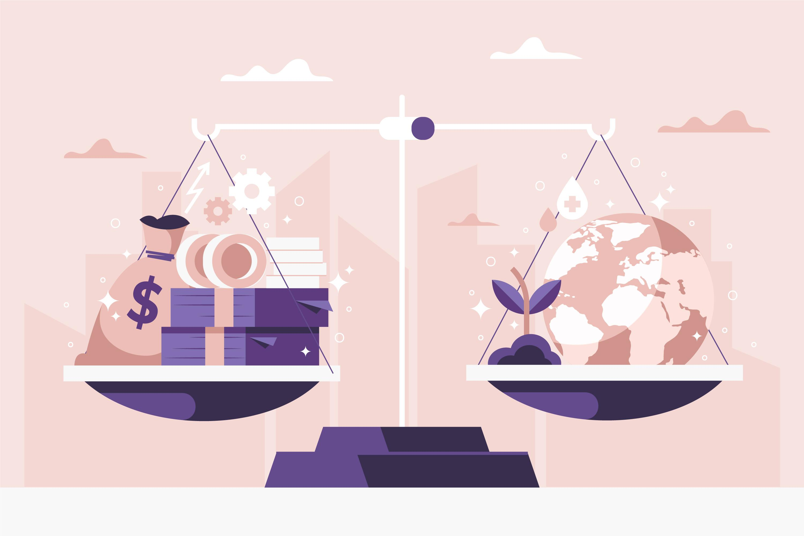

Integrity and Anti-Corruption
This course focuses on the core concepts of UTM, which serve as inspiration for creative and innovative individuals resources to fulfill the nation's future demands. Integrity, Synergy, Excellence, and Sustainability (ISES) constitute the primary pillars. Sustainability, Excellence, and Synergy. This course's fundamental idea is the importance of integrity, values, and self-identity in preventing power abuse in both daily life and organizational settings, including corruption and the implementation of anti-corruption measures.
Assignment
Assignment 1
Assignment 2
Assignment 3
Assignment 4
Reflection
The integrity and anti-corruption course heightened my awareness of ethical principles, emphasizing the importance of integrity in personal and professional conduct. It equipped me with practical strategies to combat corruption, fostering a commitment to ethical behavior in all aspects of life.